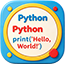

Python 工具
在 Maya Script Editor 的 Python 标签执行对应工具的启动命令。
exec(open(r"D:/Codex/maya/animcraft_pose_mirror_tool.py", "r").read())Animator tools for Maya production
这里集中放置我的 Maya 工具、安装入口和使用说明，覆盖动画制作、P4 工程文件流转、 表情控制器镜像、蒙皮辅助和个人工具箱管理。
Install

在 Maya Script Editor 的 Python 标签执行对应工具的启动命令。
exec(open(r"D:/Codex/maya/animcraft_pose_mirror_tool.py", "r").read())工具箱类插件可以通过 install 脚本或拖拽安装入口注册到 Maya。
D:/Codex/maya/Bingo_ToolBox_01/install.mel把这个站点目录作为 GitHub Pages 的根目录，或复制到仓库的 docs 目录。
maya_tools_site/
index.html
styles.css
tools.js
assets/Notes
tools.js，页面会自动生成工具卡片和详情。assets 目录，发布时不会丢资源。GitHub Pages
如果你想做成类似 anibullet.github.io 的个人工具站，
可以新建 你的用户名.github.io 仓库，把本目录内容放到仓库根目录后开启 Pages。